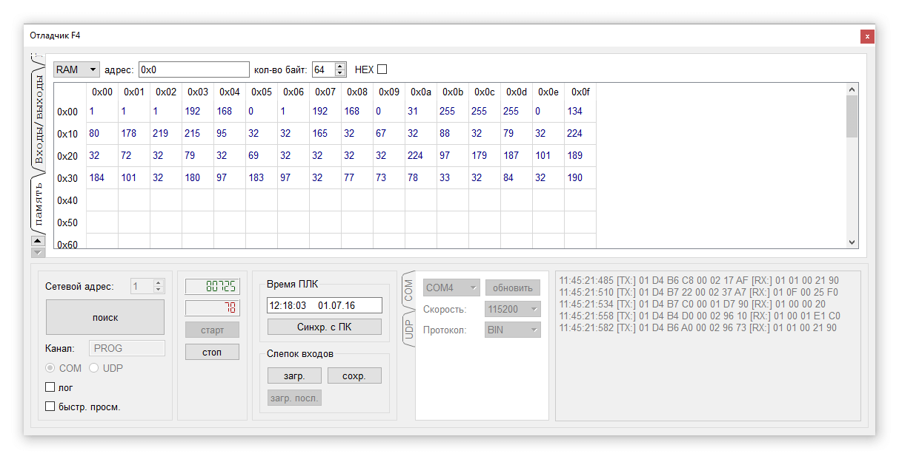

Отладчик позволяет опрашивать и изменять состояние контроллера по интерфейсу RS485 или Ethernet. Для работы отладчика к компьютеру должен быть подключен контроллер. Программа контроллера (код, загруженный в контроллер) должна соответствовать текущему проекту, открытому в среде. Управлению видимостью отладчика выполняется через панель инструментов или через меню.
По умолчанию откладчик открывается в правой части экрана в виде вкладки. Для отображения отладчика в виде отдельного окна необходимо щёлкнуть мышью по заголовку и удерживая кнопку, переместить указатель мыши. Чтобы вернуться к вкладочному представлению необходимо дважды щёлкнуть мышкой по заголовку окна.
В нижней части отладчика располагаются настройки интерфейса, по которому опрашивается контроллер.
Для опроса контроллера через COM порт (используя адаптер USB/RS485) необходимо задать сетевой адрес контроллера и нажать кнопку Поиск. Компьютер при этом автоматически просканирует все доступные COM порты, пытаясь обнаружить контроллер. В результате успешного поиска будет обновлена информация о типе протокола, скорости интерфейса и типе канала контроллера. В случае ошибки будет выдано соответствующее предупреждение.
Запустить опрос контроллера можно нажав на кнопку Старт. Выше кнопки расположены два цифровых счётчика. Счётчик зелёного цвета показывает количество успешно выполненных команд при опросе контроллера. Счётчик красного цвета увеличивается при некорректных ответах или при их отсутствии. При десяти сбойных запросах, произошедших подряд, отладчик автоматически останавливается и выводится сообщение об отсутствии связи с контроллером. Включив флаг Лог, можно видеть содержимое команд контроллеру и полученных ответов.
Окно отладчика состоит из трёх вкладок:входы/выходы, переменные и память. При первом открытии отображается вкладка входов/выходов. Количество вх/вых зависит от типа контроллера, указанного в настройках проекта. Отдельные группы вх/вых можно при необходимости скрывать. Для этого надо снять флаг, расположенный в названии группы.
К каждому входу можно указать текстовый комментарий, описывающий его назначение. Дискретные входы/выходы изображены лампочками. Включенному состоянию входов соответствует зелёный цвет, выходов - красный. При выключенном состоянии лампочки прорисованы серым цветом. Если отладчик запущен щелчок по входу или выходу приводит к попытке изменить его состояние (если был выключен включить и наоборот). Однако, это имеет смысл только в режиме эмуляции. Т.к. в противном случае состояние входа тут же перетрётся его реальной физической величиной.
Значение аналоговых входов/выходов можно менять с помощью ползунка или стрелками "влево" и "вправо" для более точной подстройки.
Во вкладке "переменные" можно просматривать и менять значение переменных проекта.
В левой части расположено дерево всех переменных проекта. Двойной щелчок мышью добавляет переменную в список просмотра, который расположен справа. Положение переменной в списке можно изменить кнопками "поднять" и "опустить". Двойной щелчок по переменной (за исключением поля где расположено её десятичное значение) удаляет её из списка. Если двойной щелчок выполнен по десятичному значению переменной то откроется диалог ввода нового значения, которое будет записано в контроллер.
Все переменные из списка просмотра можно вывести в отдельном окне, включив флаг "быстрый просмотр" в настройках отладчика. Это позволяет отслеживать состояние переменных на вкладке входов/выходов.
Весь список переменных с их текущем состоянием можно сохранить в отдельный файл. При загрузке этого файла значения всех переменных будут записаны в контроллер. С помощью этого механизма можно создавать различные наборы конфигураций проекта(если список переменных составлен из заводских установок).
Вкладка "память" позволяет читать и редактировать отдельные ячейки памяти контроллера.

В настройках задаётся тип памяти (FRAM или RAM), стартовый адрес, количество байт для чтения и вариант отображения данных (в шестнадцатеричном или десятичном представлении). Двойной щелчок по ячейке памяти делает её доступной для изменения.
При отладке программы иногда бывает необходимо выставить некий стартовый набор значений входов и переменных. Чтобы не заниматься этим каждый раз предусмотрено сохранений значений входов и переменных в отдельный файл. При открытии этого файла сохранённые в нём значения будут записаны в контроллер. Для этих действий предусмотрены кнопки "сохранить слепок", "загрузить слепок", "загрузить последний слепок". Команда "загрузить последний слепок" добавлена для того чтобы не выбирать каждый раз путь к файлу для операции. Она автоматически открывает файл, загруженный последним.